Snowflake에 오신 것을 환영합니다! 데이터베이스와 데이터웨어하우스 관리자 및 설계자를 위한 초급 가이드입니다. Snowflake 인터페이스를 탐색하는 방법과 Snowflake의 핵심 기능들을 소개할 것입니다. Snowflake 30일 무료 평가판에 등록하여 이 랩 연습을 따라 해보십시오. 기초학습을 모두 완료한 후엔 직접 데이터를 처리하고 Snowflake의 고도화된 기능들을 전문가처럼 이용할 수 있습니다.
무료 가상 실습 랩
이 Snowflake 가이드는 무료로 이용하실 수 있으며, 강사 주도형 가상 실습 랩입니다. 가상 실습 랩에 지금 등록하세요.
사전 필요 조건 및 지식
- Snowflake 30일 무료 평가판 환경 사용
- SQL, 데이터베이스 개념 및 객체에 대한 기본 지식
- CSV 쉼표로 구분된 파일 및 JSON 반정형 데이터에 대한 이해
학습할 내용:
- 스테이지, 데이터베이스, 테이블, 뷰 및 웨어하우스를 생성하는 방법
- 정형 및 반정형 데이터를 로드하는 방법
- 테이블 간 조인을 포함하여 데이터를 쿼리하는 방법
- 객체를 복제하는 방법
- 사용자 오류를 실행 취소하는 방법
- 역할 및 사용자를 생성하고 권한을 부여하는 방법
- 다른 계정과 안전하고 쉽게 데이터를 공유하는 방법
랩 환경을 준비하는 단계
Snowflake 30일 무료 평가판에 아직 등록하지 않았다면, 지금 등록하세요.
Snowflake 에디션(Standard, Enterprise, Business Critical 등), 클라우드 공급자(AWS, Azure 등) 및 지역(US East, EU 등)은 이 랩에서 중요하지 않습니다. 물리적으로 가장 가까운 지역과 가장 인기 있는 Enterprise 에디션을 선택하시길 권합니다.
등록 후, 활성화 링크와 Snowflake 계정 URL이 담긴 이메일을 받게 됩니다.
#Snowflake 사용자 인터페이스(UI)에 로그인
브라우저 창을 열고 등록 이메일에서 받은 Snowflake 30일 평가판 환경의 URL을 입력합니다.
아래 로그인 화면이 나타납니다. 등록에 사용한 사용자 이름 및 암호를 입력하세요.

Snowflake UI 소개
이 섹션에서는 사용자 인터페이스의 기본 구성 요소를 다룹니다. 왼쪽 여백에서 위에서 아래로 이동합니다.

Snowflake UI 탐색
Snowflake에 대해 알아봅시다! 이 섹션은 사용자 인터페이스의 기본적인 구성 요소를 다룹니다. UI 상단부터 왼쪽에서 오른쪽으로 이동하며 살펴보겠습니다.
Worksheets

Worksheets 탭은 SQL 쿼리 실행, DDL 및 DML 작업 수행 그리고 쿼리 또는 작업 완료 시 결과 확인을 위한 인터페이스를 제공합니다. + Worksheet 버튼을 클릭하여 새로운 워크시트를 생성 할 수 있습니다.

왼쪽 상단 모서리에는 다음이 포함됩니다.
- Home 아이콘: 기본 콘솔로 돌아가거나 워크시트를 닫을 때 사용합니다.
- Worksheet 이름 드롭다운: 기본 이름은 워크시트가 생성된 타임스탬프입니다. 타임스탬프를 클릭하여 워크시트 이름을 편집합니다. 드롭다운에는 워크시트에 대해 수행할 수 있는 추가 작업도 표시됩니다.
- 필터 관리자 버튼: 맞춤 필터는 하위 쿼리 또는 값 목록으로 해석되는 특수 키워드입니다.
오른쪽 상단 모서리에는 다음이 포함됩니다.
- + 버튼: 새 워크시트를 생성합니다.
- Context 상자: 해당 세션 동안 사용할 역할과 웨어하우스를 선택합니다. UI 또는 SQL 명령을 통해 변경할 수 있습니다.
- Share 버튼: 공유 메뉴를 열어 다른 사용자와 공유하거나 워크시트 링크를 복사합니다.
- Play/Run 버튼: 현재 커서가 있는 SQL 문 또는 선택한 여러 문을 실행합니다.
중간 창에는 다음이 포함됩니다.
- 워크시트에 대한 데이터베이스/스키마/개체 컨텍스트를 설정하기 위한 상단의 드롭다운.
- 쿼리 및 기타 SQL 문을 입력하고 실행하는 일반 작업 영역입니다.
가운데 왼쪽 패널에는 현재 워크시트에 사용 중인 역할이 액세스할 수 있는 모든 데이터베이스, 스키마, 테이블 및 보기를 탐색할 수 있는 데이터베이스 개체 브라우저가 있습니다.
아래쪽 창에는 쿼리 및 기타 작업의 결과가 표시됩니다. 또한 UI에서 해당 패널을 열고 닫는 4가지 옵션(Object, Query, Result, Chart)이 포함됩니다. Chart는 반환된 결과에 대한 시각화 패널을 엽니다. 이에 대해서는 나중에 자세히 설명합니다.
이 페이지의 다양한 창은 슬라이더를 조정하여 크기를 조정할 수 있습니다. 워크시트에 더 많은 공간이 필요한 경우 왼쪽 패널에서 데이터베이스 개체 브라우저를 축소합니다. 이 가이드의 많은 스크린샷은 이 패널을 닫은 상태로 유지합니다.
Dashboards

Dashboards 탭을 사용하면 하나 이상의 차트(재배열할 수 있는 타일 형태)를 유연하게 표시할 수 있습니다. 타일 및 위젯은 워크시트에 결과를 반환하는 SQL 쿼리를 실행하여 생성됩니다. 대시보드는 최소한의 구성으로 다양한 크기에서 작동합니다.
Databases

Data 아래의 Database 탭에는 사용자가 생성했거나 액세스 권한이 있는 데이터베이스에 대한 정보가 표시됩니다. 데이터베이스 생성, 복제, 삭제 또는 소유건을 이전하고 UI에서 데이터를 로드할 수 있습니다. 사용자 환경에 데이터베이스가 이미 있습니다. 그러나 이 실습에서는 사용하지 않습니다.
Shared Data

또한 Data 아래의 Shared Data 탭에서는 데이터 복사본을 만들지 않고도 별도의 Snowflake 계정 또는 외부 사용자 간에 Snowflake 테이블을 쉽고 안전하게 공유하도록 데이터 공유를 구성할 수 있습니다. 데이터 공유는 섹션 10에서 다룰 것입니다.
Marketplace

Data 아래의 마지막 탭인 Marketplace는 모든 Snowflake 고객이 공급자가 제공한 데이터 세트를 검색하고 사용할 수 있는 곳입니다. 공유 데이터에는 공개 및 개인화의 두 가지 유형이 있습니다. 공개 데이터는 즉시 쿼리할 수 있는 무료 데이터 세트입니다. 개인화된 데이터는 데이터 공유 승인을 위해 데이터 제공자에게 연락해야 합니다.
History

Compute 아래의 History 탭에 다음이 표시됩니다.
- Queries는 결과(사용자, 웨어하우스, 상태, 쿼리 태그 등)를 다듬는 데 사용할 수 있는 필터와 함께 이전 쿼리가 표시되는 곳입니다. Snowflake 계정에서 지난 14일 동안 실행된 모든 쿼리의 세부 정보를 봅니다. 자세한 내용을 보려면 쿼리 ID를 클릭하십시오.
- Copies은 Snowflake로 데이터를 수집하기 위해 실행되는 복사 명령의 상태를 보여줍니다.
Warehouses
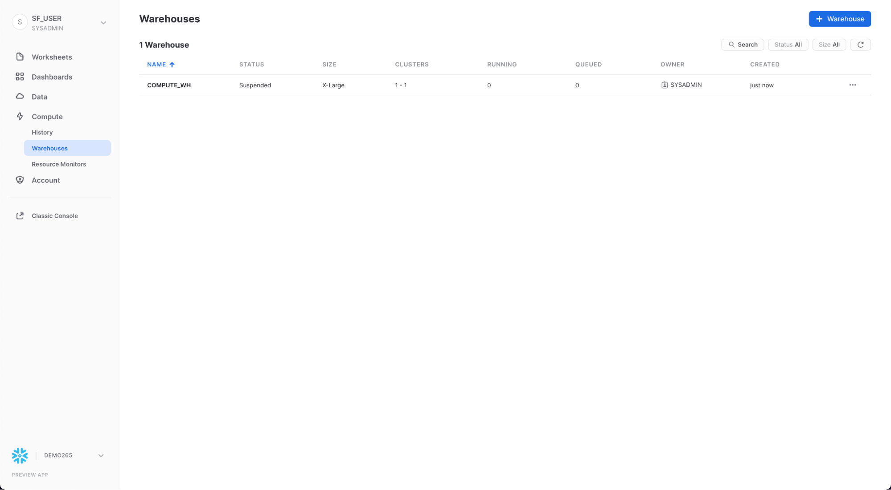
또한 Compute 아래의 Warehouses 탭은 Snowflake에서 데이터를 로드하거나 쿼리하기 위해 가상 웨어하우스로 알려진 컴퓨팅 리소스를 설정하고 관리하는 곳입니다. COMPUTE_WH(XS)라는 웨어하우스가 이미 사용자 환경에 있습니다.
Resource Monitors

Compute 아래의 마지막 탭인 Resource Monitors에는 가상 웨어하우스가 소비하는 크레딧 수를 제어하기 위해 생성된 모든 리소스 모니터가 표시됩니다. 각 리소스 모니터에 대해 크레딧 할당량, 모니터링 유형, 일정 및 가상 웨어하우스가 크레딧 한도에 도달했을 때 수행되는 조치를 보여줍니다.
Roles

Account 아래의 Roles 탭에는 역할 목록과 해당 계층이 표시됩니다. 이 탭에서 역할을 생성, 재구성 및 사용자에게 부여할 수 있습니다. 역할은 페이지 상단의 Table을 클릭하여 표/목록 형식으로 표시할 수도 있습니다.
Users
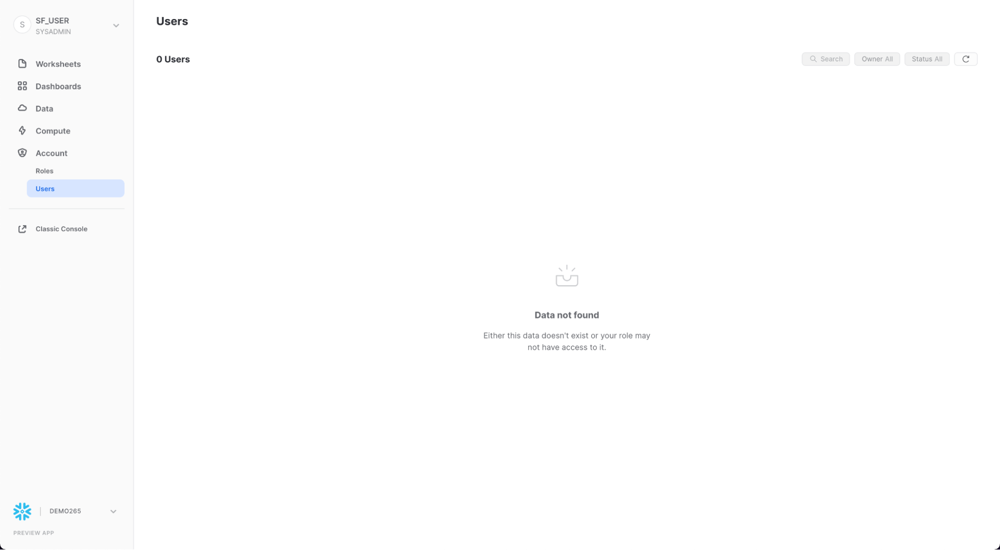
또한 Account 탭 아래의 Users 탭에는 계정의 사용자 목록, 기본 역할 및 사용자 소유자가 표시됩니다. 새 계정의 경우 추가 역할이 생성되지 않았기 때문에 레코드가 표시되지 않습니다. 현재 역할을 통해 부여된 권한에 따라 이 탭에 표시되는 정보가 결정됩니다. 탭에서 사용할 수 있는 모든 정보를 보려면 역할을 ACCOUNTADMIN으로 전환하세요.

UI 오른쪽 상단의 사용자 이름을 클릭하면 비밀번호, 역할 및 기본 설정을 변경할 수 있습니다. Snowflake에는 여러 시스템 정의 역할이 있습니다. 현재 기본 역할인 SYSADMIN을 사용하고 있으며 대부분의 실습에서 이 역할을 유지합니다.
랩 스토리
이 랩은 미국 뉴욕시의 실제 도시 전체 자전거 공유 시스템인 Citi Bike의 분석팀을 기반으로 합니다. 이 팀은 내부 트랜잭션 시스템의 데이터에 대한 분석을 실행하여 라이더 및 그들에게 최상의 서비스를 제공하는 방법을 더 잘 이해하고자 합니다.
먼저 정형 .csv 데이터를 라이더 트랜잭션에서 Snowflake로 로드할 것입니다. 그다음 오픈 소스, 반정형 JSON 날씨 데이터를 사용해 자전거 이용 횟수와 날씨 사이에 상관관계가 있는지 확인할 것입니다.
Citi Bike 라이더 트랜잭션 정형 데이터를 Snowflake에 로드할 준비부터 시작하겠습니다.
이 섹션은 다음과 같은 단계로 진행됩니다.
- 데이터베이스 및 테이블 생성
- 외부 스테이지 생성
- 데이터에 대한 파일 형식 생성
사용할 데이터는 Citi Bike NYC가 제공한 자전거 공유 데이터입니다. 이 데이터를 내보내서 미국 동부 지역의 Amazon AWS S3 버킷에 미리 구성했습니다. 데이터는 이동 시간, 위치, 사용자 유형, 성별, 나이 등에 관한 정보로 구성됩니다. AWS S3에서 이 데이터는 6,150만 행, 377개의 객체로 표현되고 1.9GB로 압축되어 있습니다.
아래는 Citi Bike CSV 데이터 파일 중 하나의 한 조각입니다.

헤더 한 행에 큰따옴표로.둘러싸여 쉼표로 구분된 형식입니다. 이는 이 섹션의 뒷부분에서 이 데이터를 저장할 Snowflake 테이블을 구성할 때 적용됩니다.
데이터베이스 및 테이블 생성
먼저, 정형 데이터를 로딩하는 데 사용할 CITIBIKE라는 이름의 데이터베이스를 만들어봅시다.
Databases 탭으로 이동합니다. 만들기를 클릭하고, 데이터베이스 이름을 CITIBIKE로 지정한 뒤, 마침을 클릭합니다.

이제 Worksheets 탭으로 이동합니다. 3단계에서 만든 워크시트가 표시되어야 합니다.

워크시트 내에서 컨텍스트를 적절하게 설정해야 합니다. 워크시트의 오른쪽 상단에서 + 옆에 있는 상자를 클릭하여 상황에 맞는 메뉴를 표시합니다. 여기에서 각 워크시트에서 보고 실행할 수 있는 요소를 제어합니다. 여기서 UI를 사용하여 컨텍스트를 설정합니다. 실습 후반부에서는 워크시트 내에서 SQL 명령을 통해 동일한 작업을 수행합니다.
다음과 같이 컨텍스트 설정을 선택합니다. Role: SYSADMIN Warehouse: COMPUTE_WH

다음으로 데이터베이스 드롭다운에서 다음 컨텍스트 설정을 선택합니다.
Database: CITIBIKE Schema = PUBLIC

워크시트에서 더 쉽게 작업할 수 있도록 이름을 바꾸겠습니다. 왼쪽 상단에서 워크시트가 생성되었을 때의 타임스탬프인 워크시트 이름을 클릭하고 CITIBIKE_ZERO_TO_SNOWFLAKE로 변경합니다.
다음으로 쉼표로 구분된 데이터를 로드하는 데 사용할 TRIPS라는 테이블을 만듭니다. UI를 사용하는 대신 워크시트를 사용하여 테이블을 생성하는 DDL을 실행합니다. 다음 SQL 텍스트를 워크시트에 복사합니다.
create or replace table trips
(tripduration integer,
starttime timestamp,
stoptime timestamp,
start_station_id integer,
start_station_name string,
start_station_latitude float,
start_station_longitude float,
end_station_id integer,
end_station_name string,
end_station_latitude float,
end_station_longitude float,
bikeid integer,
membership_type string,
usertype string,
birth_year integer,
gender integer);
커서를 명령 내 어디든 두고 페이지 상단의 파란색 실행 버튼을 클릭하여 쿼리를 실행하십시오. 또는 바로 가기 키 [Ctrl]/[Cmd]+[Enter]를 이용하십시오.
TRIPS 테이블이 생성되었는지 확인합니다. 워크시트 하단에 "테이블 TRIPS가 성공적으로 생성됨" 메시지를 표시하는 결과 섹션이 표시되어야 합니다.

워크시트의 왼쪽 상단에 있는 HOME 아이콘을 클릭하여 Databases 탭으로 이동합니다. 그런 다음 Data > Databases를 클릭합니다. 데이터베이스 목록에서 CITIBIKE > PUBLIC > TABLES를 클릭하여 새로 생성된 TRIPS 테이블을 확인합니다. 왼쪽에 데이터베이스가 표시되지 않으면 숨겨져 있을 수 있으므로 브라우저를 확장합니다.

방금 생성한 테이블 구조를 보려면 TRIPS 및 Columns 탭을 클릭합니다.

Create an External Stage
우리는 이미 pulbic 외부 S3 버킷에 준비된 쉼표로 구분된 구조화된 데이터로 작업하고 있습니다. 이 데이터를 사용하기 전에 먼저 외부 버킷의 위치를 지정하는 단계를 생성해야 합니다.
Databases 탭에서 CITIBIKE 데이터베이스와 PUBLIC 스키마를 클릭합니다. Stage 탭에서 Create 버튼을 클릭한 다음 Stages > Amazon S3를 클릭합니다.

열리는 "Create Securable Object" 대화 상자에서 SQL 문에서 다음 값을 바꿉니다.
stage_name: citibike_trips
url: s3://snowflake-workshop-lab/citibike-trips-csv/
참고: URL 끝에 마지막 슬래시(/)를 포함해야 합니다. 그렇지 않으면 나중에 버킷에서 데이터를 로드할 때 오류가 발생합니다.

이제 citibike_trips 스테이지의 내용을 살펴보자. 째가녿ㄷㅅㄴ 탭으로 이동하여 다음 SQL 문을 실행합니다.
list @citibike_trips;
하단 창의 결과에서 스테이지의 파일 목록을 확인해야 합니다.

File Format(파일 형식) 생성
Snowflake로 데이터를 로드하려면, 먼저 데이터 구조와 일치하는 파일 형식을 생성해야 합니다.
워크시트에서 다음 명령을 실행하여 파일 형식을 만듭니다.
--create file format
create or replace file format csv type='csv'
compression = 'auto' field_delimiter = ',' record_delimiter = '\n'
skip_header = 0 field_optionally_enclosed_by = '\042' trim_space = false
error_on_column_count_mismatch = false escape = 'none' escape_unenclosed_field = '\134'
date_format = 'auto' timestamp_format = 'auto' null_if = ('') comment = 'file format for ingesting data for zero to snowflake';

다음 명령을 실행하여 파일 형식이 올바른 설정으로 생성되었는지 확인합니다.
--verify file format is created
show file formats in database citibike;
생성된 파일 형식은 결과에 나열되어야 합니다.
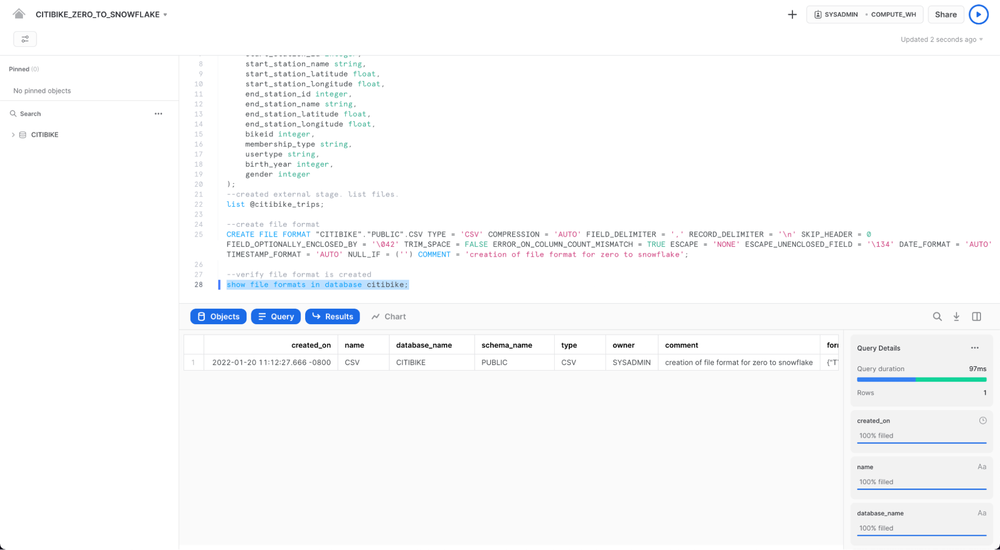
이 섹션에서는 데이터 웨어하우스와 COPY 명령을 사용하여 방금 생성한 Snowflake 테이블에 정형 데이터 대량 로드 (bulk loading)를 시작할 것입니다.
데이터 로드를 위한 웨어하우스 크기 조정 및 사용
데이터를 로드하려면 컴퓨팅 파워가 필요합니다. Snowflake의 컴퓨팅 노드는 가상 웨어하우스 (Virtual Warehouse)라고 하며 워크로드가 데이터 로드, 쿼리 실행 또는 DML 작업을 수행하는지 여부에 따라 워크로드에 맞춰 동적으로 크기를 늘리거나 줄일 수 있습니다. 각 워크로드는 자체 데이터 웨어하우스를 보유할 수 있으므로 리소스 경합이 없습니다.
Warehouses 탭(Compute 아래)으로 이동합니다. 여기에서 기존 웨어하우스를 모두 보고 사용 추세를 분석할 수 있습니다.
상단 오른쪽 상단 모서리에 있는 + Warehouse 옵션을 확인하세요. 여기에서 새 웨어하우스를 빠르게 추가할 수 있습니다. 단, 30일 체험판 환경에 포함된 기존 웨어하우스 COMPUTE_WH를 사용하고자 합니다.
COMPUTE_WH 웨어하우스 행을 클릭합니다. 그런 다음 위의 오른쪽 상단 모서리에 있는 ...(점 점)을 클릭하여 웨어하우스에서 수행할 수 있는 작업을 확인합니다. 이 웨어하우스를 사용하여 AWS S3에서 데이터를 로드합니다.

Edit을 클릭하여 이 웨어하우스의 옵션을 살펴보고 Snowflake의 고유한 기능에 대해 알아보세요.

- Size 드롭다운은 웨어하우스의 용량을 선택하는 곳입니다. 더 큰 데이터 로드 작업이나 컴퓨팅 집약적인 쿼리의 경우 더 큰 웨어하우스가 권장됩니다. 크기는 Snowflake 계정이 호스팅되는 클라우드 공급자(AWS, Azure 또는 GCP)에서 프로비저닝된 기본 컴퓨팅 리소스로 변환됩니다. 또한 웨어하우스가 실행되는 각 전체 시간 동안 웨어하우스에서 소비한 크레딧 수를 결정합니다. 크기가 클수록 클라우드 공급자의 더 많은 컴퓨팅 리소스가 웨어하우스에 할당되고 더 많은 크레딧이 소모됩니다. 예를 들어
4X-Large설정은 1시간마다 128크레딧을 사용합니다. 이 크기는 클릭 한 번으로 언제든지 위아래로 변경할 수 있습니다. - Snowflake Enterprise Edition(또는 그 이상)을 사용 중이고 Multi-cluster Warehouse 옵션이 활성화되어 있으면 추가 옵션이 표시됩니다. 여기에서 최대 10개의 클러스터까지 여러 컴퓨팅 리소스 클러스터를 사용하도록 웨어하우스를 설정할 수 있습니다. 예를 들어
4X-Large다중 클러스터 웨어하우스에 최대 클러스터 크기가 10으로 할당된 경우 해당 웨어하우스에 전력을 공급하는 컴퓨팅 리소스의 10배까지 확장할 수 있으며 몇 초 만에 이 작업을 수행할 수 있습니다. 그러나 이렇게 하면 10개의 클러스터가 모두 1시간 동안 실행되는 경우 웨어하우스에서 소비하는 크레딧 수가 1280으로 증가합니다(128 크레딧/시간 x 10 클러스터). 다중 클러스터는 동일한 웨어하우스를 사용하여 동시에 다른 쿼리를 실행하는 많은 비즈니스 분석가와 같은 동시성 시나리오에 이상적입니다. 이 사용 사례에서는 다양한 쿼리가 빠르게 실행되도록 여러 클러스터에 할당됩니다. - Advanced Warehouse Options에서 옵션을 사용하면 웨어하우스를 사용하지 않을 때 자동으로 일시 중단하여 크레딧이 불필요하게 소모되지 않도록 할 수 있습니다. 일시 중단된 웨어하우스를 자동으로 재개하는 옵션도 있으므로 새 워크로드가 보내지면 자동으로 백업이 시작됩니다. 이 기능을 통해 Snowflake의 효율적인 "사용한 만큼만 지불" 청구 모델을 사용하여 필요할 때 리소스를 확장하고 필요하지 않을 때 자동으로 축소하거나 꺼서 유휴 리소스를 거의 제거할 수 있습니다.
경고 - 지출을 조심하십시오!
이 랩을 진행하는 동안이나 이후에 정당한 이유 없이 다음 작업을 수행하는 걸 권장하지 않습니다. 왜냐면 그렇게 할 경우에는 $400의 무료 크레딧을 원하는 것보다 빨리 소진할 수도 있습니다.
- 자동 일시 중단을 비활성화하지마십시오. 자동 일시 중단이 비활성화되면, 웨어하우스가 계속 실행되어 사용하지 않을 때도 크레딧을 소모합니다.
- 워크로드에 비해 과도하게 큰 웨어하우스를 사용하지마십시오. 웨어하우스가 커질수록 더 많은 크레딧이 소모됩니다.
이 가상 웨어하우스를 사용하여 CSV 파일(AWS S3 버킷에 저장됨)의 구조화된 데이터를 Snowflake로 로드할 것입니다. 그러나 사용하는 컴퓨팅 리소스를 늘리기 위해 먼저 웨어하우스의 크기를 변경합니다. 로드 후 소요된 시간을 기록하고 이 섹션의 이후 단계에서 더 빠른 로드 시간을 관찰하면서 더 큰 웨어하우스로 동일한 로드 작업을 다시 수행합니다.
이 데이터 웨어하우스의 Size를 X-Small에서 Small로 변경합니다. Save Warehouse 버튼을 클릭합니다.
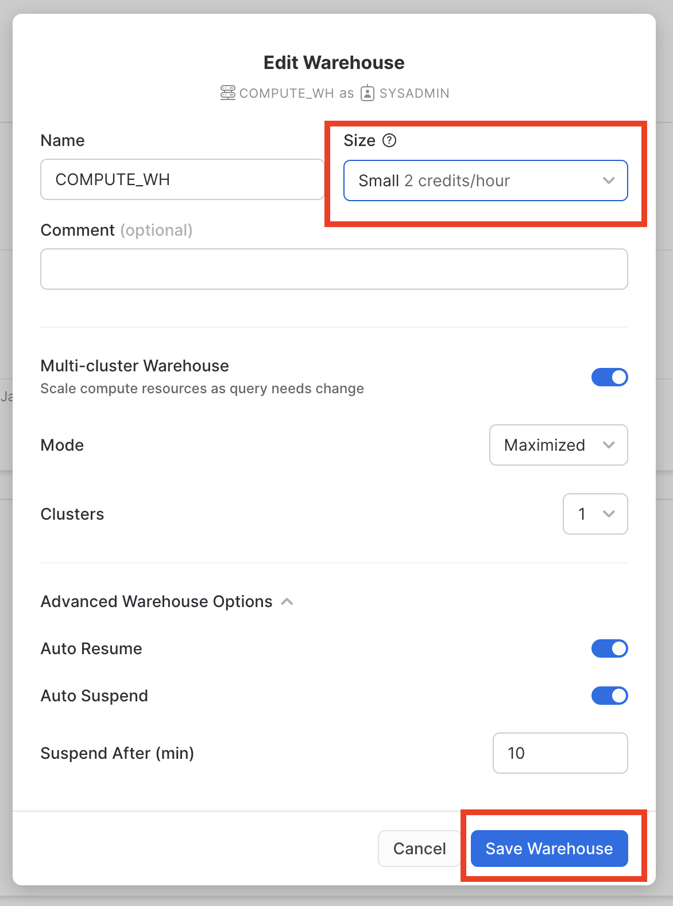
데이터 로드
이제 COPY 명령을 실행하여 데이터를 앞서 생성한 TRIPS 테이블로 로드할 수 있습니다.
Worksheet 탭에서 CITIBIKE_ZERO_TO_SNOWFLAKE 워크시트로 다시 이동합니다. 워크시트 컨텍스트가 올바르게 설정되었는지 확인합니다.
Role: SYSADMIN Warehouse: COMPUTE_WH Database: CITIBIKE Schema = PUBLIC

워크시트에서 다음의 문을 실행하여 구성한 데이터를 테이블로 로드합니다. 이는 30초 정도 소요됩니다.
copy into trips from @citibike_trips file_format=csv PATTERN = '.*csv.*' ;
결과 창에서 로드된 각 파일의 상태를 확인해야 합니다. 로드가 완료되면 오른쪽 하단의 Query Details 창에서 마지막으로 실행된 명령문에 대한 다양한 상태, 오류 통계 및 시각화를 스크롤할 수 있습니다.
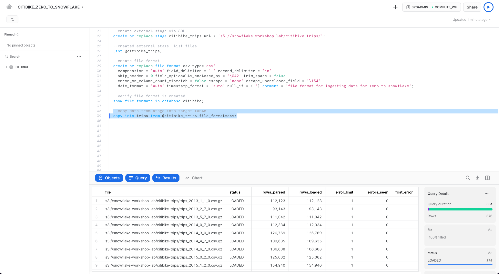
그런 다음 Home 아이콘을 클릭한 다음 Compute > History을 클릭하여 History 탭으로 이동합니다. 목록 맨 위에서 마지막으로 실행된 COPY INTO 문이어야 하는 쿼리를 선택합니다. 쿼리가 실행하기 위해 취한 단계, 쿼리 세부 정보, 가장 비싼 노드 및 추가 통계에 유의하십시오.

이제 더 큰 웨어하우스로 TRIPS 테이블을 다시 로드하여 추가 컴퓨팅 리소스가 로드 시간에 미치는 영향을 살펴보겠습니다.
워크시트로 돌아가서 TRUNCATE TABLE 명령을 사용하여 모든 데이터와 메타데이터를 지웁니다.
truncate table trips;
결과에 "Query produced no results"(쿼리에서 결과가 생성되지 않음)이 표시되어야 합니다.
다음 ALTER WAREHOUSE를 사용하여 웨어하우스 크기를 large으로 변경합니다.
--change warehouse size from small to large (4x)
alter warehouse compute_wh set warehouse_size='large';
다음 SHOW WAREHOUSES를 사용하여 변경 사항을 확인하십시오.
--load data with large warehouse
show warehouses;

워크시트 컨텍스트 상자를 클릭한 다음 컨텍스트 상자의 오른쪽에 있는 Configure(3줄) 아이콘을 클릭하고 UI를 사용하여 크기를 Small에서 Large로 변경할 수도 있습니다. Size 드롭다운:


동일한 데이터를 다시 로드하려면 이전과 동일한 COPY INTO 문을 실행합니다.
copy into trips from @citibike_trips
file_format=CSV;

로드가 완료되면 Queries 페이지로 다시 이동합니다(Home 아이콘 > Compute > History > Queries). 두 COPY INTO 명령의 시간을 비교하십시오. Large 웨어하우스를 사용한 로드는 훨씬 더 빨랐습니다.
데이터 분석을 위한 새 웨어하우스 생성
랩 스토리로 돌아가서 Citi Bike 팀이 데이터 로드/ETL 워크로드와 BI 도구를 사용하여 Snowflake를 쿼리하는 분석 최종 사용자 간의 리소스 경합을 제거하고자 한다고 가정해 보겠습니다. 앞서 언급했듯이, Snowflake는 다양한 워크로드에 서로 다른 알맞은 크기의 웨어하우스를 할당하여 이를 쉽게 수행할 수 있습니다. Citi Bike는 이미 데이터 로드를 위한 웨어하우스를 보유하고 있기 때문에, 최종 사용자가 분석을 실행하기 위한 새로운 웨어하우스를 생성해 보겠습니다. 다음 섹션에서 이 웨어하우스를 이용하여 분석을 수행할 것입니다.
Compute > Warehouses 탭으로 이동하여 + Warehouse를 클릭하고 새 웨어하우스의 이름을 ANALYTICS_WH로 지정하고 크기를 Large로 설정합니다.
Snowflake Enterprise Edition(또는 그 이상)을 사용 중이고 Multi-cluster Warehouses가 활성화된 경우 추가 설정이 표시됩니다.
- Max Clusters가
1로 설정되어 있는지 확인합니다. - 다른 모든 설정은 기본값으로 둡니다.

Create Warehouse 버튼을 클릭하여 웨어하우스를 만듭니다.
이전 연습에서, Snowflake의 대량 로더인 COPY 명령과 웨어하우스 COMPUTE_WH를 이용하여 데이터를 두 개의 테이블로 로드했습니다. 이제 워크시트와 두 번째 웨어하우스인 ANALYTICS_WH를 이용하여 해당 테이블의 데이터를 쿼리해야 하는 Citi Bike의 분석 사용자 역할을 수행해 보겠습니다.
쿼리 실행
CITIBIKE_ZERO_TO_SNOWFLAKE 워크시트로 이동하여 마지막 섹션에서 생성한 새 웨어하우스를 사용하도록 웨어하우스를 변경합니다. 워크시트 컨텍스트는 다음과 같아야 합니다.
Role: SYSADMIN Warehouse: ANALYTICS_WH (L) Database: CITIBIKE Schema = PUBLIC

아래의 쿼리를 실행하여 trips 데이터 샘플을 확인합니다.
select * from trips limit 20;
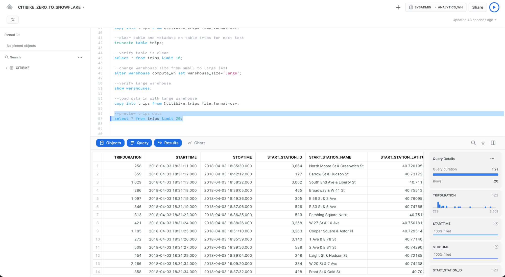
먼저 Citi Bike 사용에 관한 몇 가지 기본적인 시간별 통계를 살펴보시죠. 아래의 쿼리를 워크시트에서 실행합니다. 이는 시간당 이동 횟수, 평균 이동 기간 및 평균 이동 거리를 보여줍니다.
select date_trunc('hour', starttime) as "date",
count(*) as "num trips",
avg(tripduration)/60 as "avg duration (mins)",
avg(haversine(start_station_latitude, start_station_longitude, end_station_latitude, end_station_longitude)) as "avg distance (km)"
from trips
group by 1 order by 1;
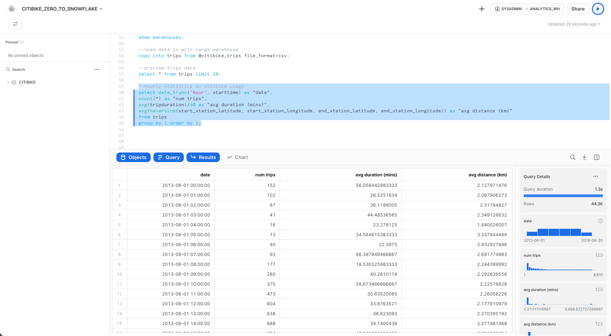
Result Cache 활용
Snowflake에는 지난 24시간 동안 실행된 모든 쿼리의 결과를 보유하고 있는 결과 캐시가 있습니다. 이는 웨어하우스 전반에 걸쳐 사용할 수 있으므로 기본 데이터가 변경되지 않았다면, 한 사용자에게 반환된 쿼리 결과를 동일한 쿼리를 실행하는 해당 시스템의 다른 사용자가 사용할 수 있습니다. 이러한 반복 쿼리는 매우 빠르게 반환될 뿐만 아니라 컴퓨팅 크레딧도 전혀 사용하지 않습니다.
정확히 동일한 쿼리를 다시 실행하여 결과 캐시가 작동하는지 확인해보시죠.
select date_trunc('hour', starttime) as "date",
count(*) as "num trips",
avg(tripduration)/60 as "avg duration (mins)",
avg(haversine(start_station_latitude, start_station_longitude, end_station_latitude, end_station_longitude)) as "avg distance (km)"
from trips
group by 1 order by 1;
결과가 캐시되었기 때문에 두 번째 쿼리가 훨씬 더 빠르게 실행되었음을 오른쪽 Query Details 창에서 확인합니다.

다른 쿼리 실행
다음으로, 다음과 같은 쿼리를 실행하여 몇 월이 가장 바쁜지 확인하겠습니다.
select
monthname(starttime) as "month",
count(*) as "num trips"
from trips
group by 1 order by 2 desc;

테이블 복제
Snowflake를 사용하면 "제로 카피 클론"이라고도 하는 테이블, 스키마 및 데이터베이스의 클론을 몇 초 안에 생성할 수 있습니다. 클론을 생성할 때 원본 객체에 있는 데이터의 스냅샷을 찍으며 복제된 객체에서 이를 사용할 수 있습니다. 복제된 객체는 쓰기 가능하고 클론 원본과는 독립적입니다. 따라서 원본 객체 또는 클론 객체 중 하나에 이뤄진 변경은 다른 객체에는 포함되지 않습니다.
제로 카피 클론 생성의 일반적인 사용 사례는 개발 및 테스팅이 사용하는 운영 환경을 복제하여 운영 환경에 부정적인 영향을 미치지 않게 두 개의 별도 환경을 설정하여 관리할 필요가 없도록 테스트하고 실험하는 것입니다.
워크시트에서 다음 명령을 실행하여 trips 테이블의 개발(dev) 테이블 복제본을 만듭니다.
create table trips_dev clone trips
왼쪽 창에서 세 개의 점(...)을 클릭하고 Refresh를 선택합니다. CITIBIKE 데이터베이스 아래의 개체 트리를 확장하고 trips_dev라는 새 테이블이 표시되는지 확인합니다. 이제 개발 팀은 trips 테이블이나 다른 개체에 영향을 주지 않고 이 테이블을 사용하여 업데이트 또는 삭제를 포함하여 원하는 모든 작업을 수행할 수 있습니다.

랩의 예제로 돌아가서, Citi Bike 분석팀은 날씨가 자전거 이용 횟수에 어떻게 영향을 미치는지 확인하고자 합니다. 이를 위해, 이 섹션에서는 다음을 수행합니다.
- 공개된 S3 버킷에 보관된 JSON 형식의 날씨 데이터 로드
- 뷰 생성 및 SQL 점 표기법 (dot notation)을 사용해 반정형 데이터를 쿼리
- JSON 데이터를 이전에 로드된
TRIPS데이터에 조인하는 쿼리를 실행 - 날씨 및 자전거 이용 횟수 데이터를 분석하여 관계 파악
JSON 데이터는 MeteoStat에서 제공한 날씨 정보로 구성되며 이는 2016년 7월 5일부터 2019년 6월 25일까지 뉴욕시의 과거 날씨를 상세히 제시합니다. 또한 데이터가 57,900행, 61개 객체 및 2.5MB 압축으로 이뤄진 AWS S3에 구성됩니다. 텍스트 편집기에서 보면 GZ 파일의 원시 JSON은 다음과 같습니다.

데이터베이스 및 테이블 생성
먼저, 워크시트를 통해, 비정형 데이터를 저장하는 데 사용할 WEATHER라는 이름의 데이터베이스를 만들어봅시다.
create database weather;
워크시트 내에 컨텍스트를 적절하게 설정합니다.
use role sysadmin;
use warehouse compute_wh;
use database weather;
use schema public;
다음, JSON 데이터를 로딩하는 데 사용할 JSON_WEATHER_DATA라는 이름의 데이터베이스를 만들어봅시다. 워크시트에서 아래의 SQL 텍스트를 실행합니다. Snowflake에는 VARIANT라는 특수 열 유형이 있어 이를 통해 전체 JSON 객체를 저장하고 궁극적으로는 직접 쿼리할 수 있습니다.
create table json_weather_data (v variant);
워크시트 하단의 결과 창에서 JSON_WEATHER_DATA 테이블이 생성되었는지 확인합니다.
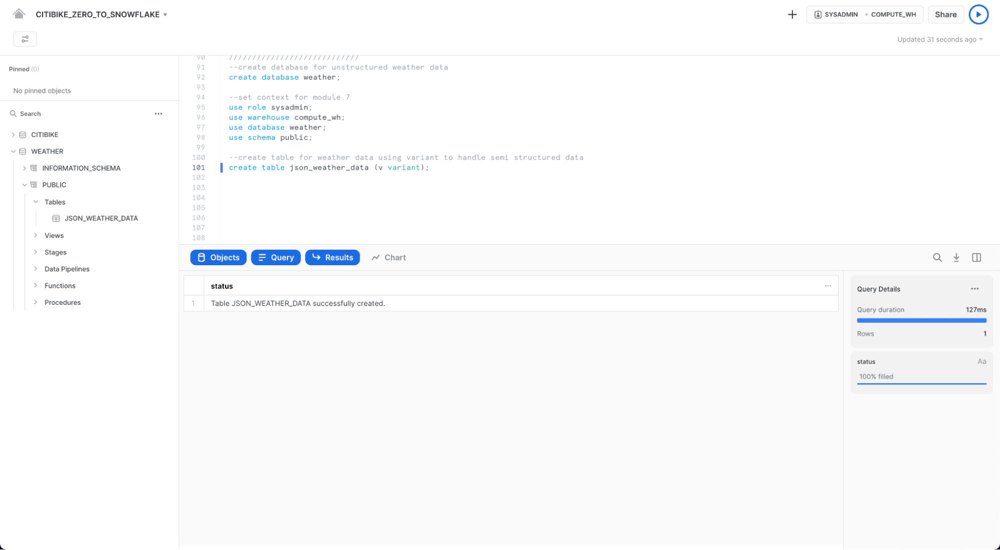
External Stage 생성
CITIBIKE_ZERO_TO_SNOWFLAKE 워크시트에서 다음 명령을 사용하여 AWS S3에서 반정형 JSON 데이터가 저장되는 버킷을 가리키는 단계를 생성합니다.
create stage nyc_weather
url = 's3://snowflake-workshop-lab/weather-nyc';
이제 nyc_weather 스테이지의 콘텐츠를 살펴보겠습니다. Worksheets 탭으로 이동합니다. LIST 명령과 함께 다음 문을 실행하여 파일 목록을 표시합니다.
list @nyc_weather;
S3의 여러 gz 파일이 하단 창의 결과 창에 다음과 같이 결과로 나타나야 합니다.

비정형 데이터 로드 및 확인
이 섹션에서는 웨어하우스를 사용하여 S3 버킷의 데이터를 이전에 생성한 JSON_WEATHER_DATA 테이블로 로드합니다.
CITIBIKE_ZERO_TO_SNOWFLAKE 워크시트에서 아래 COPY 명령을 실행하여 데이터를 로드합니다.
SQL 명령에서 FILE FORMAT 객체를 인라인으로 지정할 수 있는 방법에 주목하십시오. 정형 데이터를 로드했던 이전 섹션에서 파일 형식을 자세하게 정의해야 했습니다. 여기에 있는 JSON 데이터는 형식이 잘 지정되어 있기 때문에 기본 설정을 사용해 간단하게 JSON 유형을 지정할 수 있습니다.
copy into json_weather_data
from @nyc_weather
file_format = (type=json);

로드된 데이터를 살펴보십시오.
select * from json_weather_data limit 10;
행을 클릭하여 오른쪽 패널에 형식 JSON을 표시합니다.

패널의 표시를 닫고 쿼리 세부 정보를 다시 표시하려면 패널의 오른쪽 모서리에 마우스를 가져가면 나타나는 X(닫기) 버튼을 클릭합니다.
뷰 생성 및 반정형 데이터 쿼리
Snowflake를 통해 어떻게 뷰를 생성하고 또 SQL을 이용해 JSON 데이터를 어떻게 직접 쿼리할 수 있는지 살펴봅시다.
Worksheets 탭에서 다음의 명령을 실행하십시오. 비정형 JSON 날씨 데이터에 대한 뷰를 열 형식 뷰로 생성하여 분석가가 더 쉽게 이해하고 쿼리할 수 있도록 할 것입니다. city_id 5128638은 뉴욕시에 해당합니다.
create view json_weather_data_view as
select
v:time::timestamp as observation_time,
v:city.id::int as city_id,
v:city.name::string as city_name,
v:city.country::string as country,
v:city.coord.lat::float as city_lat,
v:city.coord.lon::float as city_lon,
v:clouds.all::int as clouds,
(v:main.temp::float)-273.15 as temp_avg,
(v:main.temp_min::float)-273.15 as temp_min,
(v:main.temp_max::float)-273.15 as temp_max,
v:weather[0].main::string as weather,
v:weather[0].description::string as weather_desc,
v:weather[0].icon::string as weather_icon,
v:wind.deg::float as wind_dir,
v:wind.speed::float as wind_speed
from json_weather_data
where city_id = 5128638;
SQL dot notation (점 표기법) v:city.coord.lat은 이 명령에서 JSON 계층 구조 내 더 낮은 수준의 값을 가져오는 데 사용됩니다. 이는 각 필드를 관계형 테이블의 열인 것처럼 취급할 수 있도록 합니다.
새로운 뷰가 UI 왼쪽 WEATHER > PUBLIC > Views에 json_weather_data로 나타나야 합니다. 이를 보기 위해 데이터베이스 객체 브라우저를 확장 또는 새로 고침해야 할 수도 있습니다.
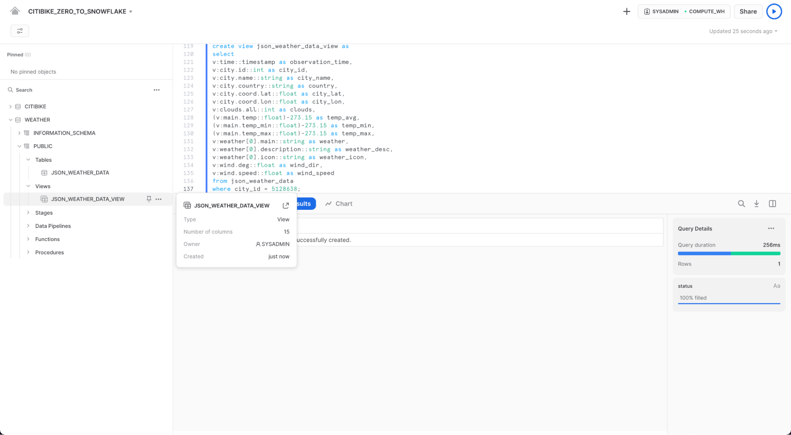
워크시트를 통해 다음 쿼리를 사용하여 뷰를 확인하십시오.
select * from json_weather_data_view
where date_trunc('month',observation_time) = '2018-01-01'
limit 20;
그 결과가 일반적인 정형 데이터 소스처럼 보여야 함에 주목하세요. 결과 세트의 observation_time 값이 다를 수도 있습니다.

데이터 세트에 대한 상관 관계를 보기 위해 조인 작업 사용
이제 JSON 날씨 데이터를 CITIBIKE.PUBLIC.TRIPS 데이터에 조인하여 원래 질문인 날씨가 자전거 이용 횟수에 어떻게 영향을 미치는지에 대해 답할 것입니다.
WEATHER를 TRIPS에 조인하고 특정 날씨 조건과 관련된 이동 횟수를 확인하기 위해 아래의 명령을 실행하십시오.
select weather as conditions
,count(*) as num_trips
from citibike.public.trips
left outer join json_weather_data_view
on date_trunc('hour', observation_time) = date_trunc('hour', starttime)
where conditions is not null
group by 1 order by 2 desc;

최초의 목적은 이용자 수와 날씨 데이터 모두를 분석하여 자전거 이용 횟수와 날씨 간에 어떤 상관 관계가 있는지 확인하는 것이었습니다. 위의 테이블에 따르면 답이 명확합니다. 상상하는 바와 같이, 날씨가 좋을 때의 이동 횟수가 훨씬 더 많은걸 볼 수 있네요!
Snowflake의 타임 트래블 기능으로 사전 구성 가능한 기간 내 어느 시점이든 데이터에 액세스할 수 있습니다. 기본 기간은 24시간이며 Snowflake 엔터프라이즈 에디션으로는 90일까지 가능합니다. 대부분의 데이터 웨어하우스는 이러한 기능을 제공할 수 없지만, 짐작하셨겠지만 Snowflake는 이러한 기능을 쉽게 만들어 줍니다!
몇 가지 유용한 적용례는 다음과 같습니다.
- 삭제되었을 수도 있는 테이블, 스키마 및 데이터베이스 같은 데이터 관련 객체를 복구
- 과거의 주요 시점으로부터 데이터를 복제하고 백업
- 데이터 사용을 분석하고 특정 기간에 대해 조작
테이블 삭제 및 복구
먼저 실수로 또는 의도적으로 삭제한 데이터 객체를 어떻게 복구할 수 있는지 살펴보겠습니다.
워크시트에서 다음의 DROP 명령을 실행하여 JSON_WEATHER_DATA 테이블을 제거합니다.
drop table json_weather_data;
json_weather_data 테이블에서 SELECT 문을 실행합니다. 기본 테이블이 삭제되었기 때문에 결과 창에 오류가 나타나야 합니다.
select * from json_weather_data limit 10;

이제 이 테이블을 다음과 같이 복구합니다.
undrop table json_weather_data;
json_weather_data 테이블이 복구되었을겁니다.
--verify table is undropped
select * from json_weather_data_view limit 10;
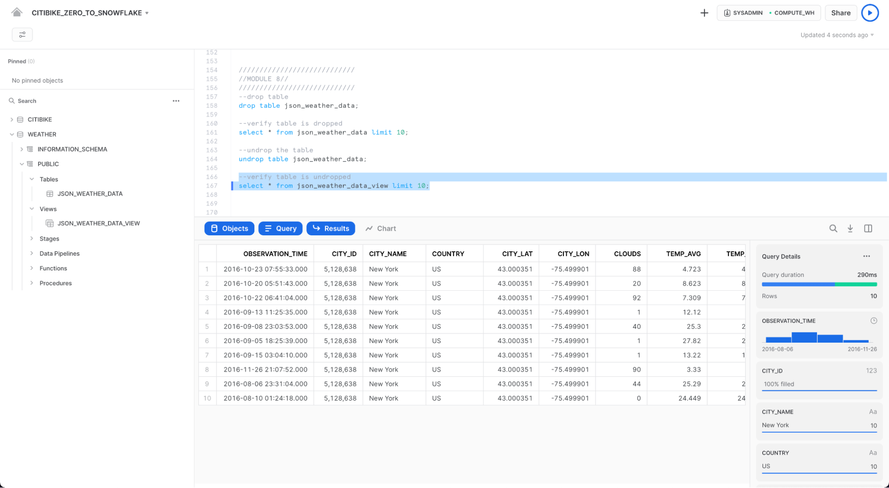
테이블 롤백
테이블을 이전 상태로 롤백하여 CITIBIKE 데이터베이스의 TRIPS 테이블에 있는 모든 스테이션 이름을 "oops"라는 단어로 대체하는 의도하지 않은 DML 오류를 수정하겠습니다.
먼저 워크시트의 컨텍스트가 적절한지 다음과 같이 확인합니다.
use role sysadmin;
use warehouse compute_wh;
use database citibike;
use schema public;
다음의 명령을 실행하여 테이블의 모든 스테이션 이름을 "oops"라는 단어로 대체합니다.
update trips set start_station_name = 'oops';
이제 자전거 이용 횟수별로 상위 20개 스테이션을 반환하는 쿼리를 실행합니다. 스테이션 이름 결과는 단 하나의 행으로 나옴에 주의하세요.
select
start_station_name as "station",
count(*) as "rides"
from trips
group by 1
order by 2 desc
limit 20;

보통의 상황이라면 놀라는것도 잠시뿐 빨리 백업이 주변에 있기를 바랄 것입니다. Snowflake에서는, 단순히 명령을 실행하여 마지막 UPDATE 명령의 쿼리 ID를 찾아 $QUERY_ID라는 변수에 저장하면 됩니다.
set query_id =
(select query_id from table(information_schema.query_history_by_session (result_limit=>5))
where query_text like 'update%' order by start_time limit 1);
올바른 스테이션 이름을 가진 테이블을 다음과 같이 다시 만듭니다.
create or replace table trips as
(select * from trips before (statement => $query_id));
다음과 같이 SELECT 문을 다시 실행하여 스테이션 이름이 복구되었는지 확인합니다.
select
start_station_name as "station",
count(*) as "rides"
from trips
group by 1
order by 2 desc
limit 20;
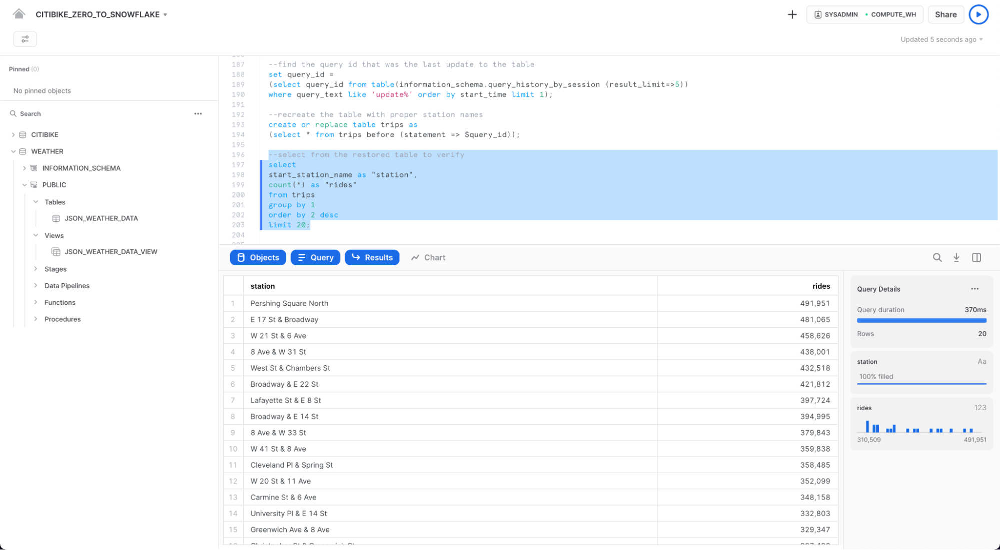
이 섹션에서는 새로운 역할 생성 및 특정 권한 부여와 같은 Snowflake의 역할 기반 액세스 제어(RBAC) 측면을 살펴보고자 합니다. 또한 ACCOUNTADMIN(계정 관리자) 역할도 다뤄볼 것입니다.
Citi Bike 이야기를 계속하기 위해 주니어 DBA가 Citi Bike에 합류하여 시스템에서 정의한 기본 역할인 SYSADMIN보다 적은 권한을 지닌 새로운 역할을 만들고 싶다고 가정해 보겠습니다.
새로운 역할 생성 및 사용자 추가
워크시트에서 ACCOUNTADMIN 역할을 새로운 역할로 전환합니다. ACCOUNTADMIN 은 SYSADMIN 및 SECURITYADMIN 시스템 정의 역할을 캡슐화합니다. 이는 시스템의 최상위 역할이며 계정에서 제한된 수의 사용자에게만 부여되어야 합니다. 워크시트에서 다음을 실행합니다.
use role accountadmin;
워크시트의 오른쪽 상단에서 컨텍스트가 ACCOUNTADMIN

역할을 액세스 제어에 사용하려면 최소한 한 명의 사용자가 역할에 할당되어야 합니다. 이제 JUNIOR_DBA라는 새 역할을 만들고 Snowflake 사용자에게 할당해 보겠습니다. 이 작업을 완료하려면 UI에 로그인할 때 사용한 이름인 사용자 이름을 알아야 합니다.
다음 명령을 사용하여 역할을 생성하고 할당합니다. GRANT ROLE 명령을 실행하기 전에 YOUR_USERNAME_GOES_HERE를 사용자 이름으로 바꿉니다.
create role junior_dba;
grant role junior_dba to user 유저 이름을 여기에 기입하세요;
워크시트 컨텍스트를 다음과 같이 JUNIOR_DBA 역할로 변경합니다.
use role junior_dba;
워크시트의 오른쪽 상단에서 컨텍스트가.JUNIOR_DBA 역할을 반영하여 변경되었음에 주목하세요.

또한 새로 생성된 역할에는 웨어하우스에 대한 사용 권한이 없기 때문에 웨어하우스가 선택되지 않습니다. ADMIN 역할로 다시 전환하여 수정하고 COMPUTE_WH 웨어하우스에 사용 권한을 부여해 보겠습니다.
use role accountadmin;
grant usage on warehouse compute_wh to role junior_dba;
JUNIOR_DBA 역할로 다시 전환합니다. 이제 COMPUTE_WH를 사용할 수 있습니다.
use role junior_dba;
use warehouse compute_wh;
마지막으로 왼쪽의 데이터베이스 개체 브라우저 패널에서 CITIBIKE 및 WEATHER 데이터베이스가 더 이상 나타나지 않는 것을 알 수 있습니다. 이는 JUNIOR_DBA 역할에 액세스 권한이 없기 때문입니다.
ACCOUNTADMIN 역할로 다시 전환하고 CITIBIKE 및 WEATHER 데이터베이스를 보고 사용하는 데 필요한 USAGE 권한을 JUNIOR_DBA에 부여합니다.
use role accountadmin;
grant usage on database citibike to role junior_dba;
grant usage on database weather to role junior_dba;
JUNIOR_DBA 역할로 다음과 같이 전환합니다.
use role junior_dba;
이제 CITIBIKE 및 WEATHER 데이터베이스가 나타나는지 확인하십시오. 나타나지 않는다면 새로 고침 아이콘을 클릭하여 시도하십시오.

계정 관리자 뷰
이 역할만 액세스할 수 있는 UI의 다른 영역을 보려면 액세스 제어 역할을 다시 ACCOUNTADMIN으로 변경합니다. 그러나 이 작업을 수행하려면 워크시트 대신 UI를 사용하십시오.
먼저 워크시트의 왼쪽 상단 모서리에 있는 Home 아이콘을 클릭합니다. 그런 다음 UI의 왼쪽 상단에서 이름을 클릭하여 사용자 기본 설정 메뉴를 표시합니다. 메뉴에서 Switch Role으로 이동하여 ACCOUNTADMIN을 선택합니다.

UI 세션을 ACCOUNTADMIN 역할로 전환하면 Account에서 새 탭을 사용할 수 있습니다.
Usage

Usage 탭에는 각각 고유한 페이지가 있는 다음이 표시됩니다.
- Organization: 조직의 모든 계정에서 사용된 크레딧입니다.
- Consumption: 현재 계정의 가상 웨어하우스에서 소비한 크레딧입니다.
- Storage: 지난 달 현재 계정의 모든 데이터베이스, 내부 단계 및 Snowflake Failsafe에 저장된 평균 데이터 양입니다.
- Transfers: 지난 한 달 동안 해당 지역(현재 계정의 경우)에서 다른 지역으로 전송된 평균 데이터 양입니다.
각 페이지의 오른쪽 상단 모서리에 있는 필터를 사용하여 사용량/소비량 등을 분류할 수 있습니다. 다양한 측정에 의한 시각화.
Security

Security 탭에는 Snowflake 계정에 대해 생성된 네트워크 정책이 포함되어 있습니다. 페이지 오른쪽 상단의 "+ 네트워크 정책"을 선택하여 새 네트워크 정책을 만들 수 있습니다.
Billing

Billing 탭에는 계정에 대한 결제 수단이 포함되어 있습니다.
- Snowflake 계약 고객인 경우 탭에 계약 정보와 연결된 이름이 표시됩니다.
- 주문형 Snowflake 고객인 경우 탭에 월별 결제에 사용된 신용 카드가 표시됩니다(입력된 경우). 등록된 신용 카드가 없는 경우 평가판이 종료될 때 Snowflake를 계속 사용하려면 신용 카드를 추가할 수 있습니다.
다음 섹션에서는 UI 세션에 대한 ACCOUNTADMIN 역할을 유지합니다.
Snowflake는 공유를 통해 계정 간 데이터 액세스를 가능하게 합니다. 공유는 데이터 공급자가 생성하고 데이터 소비자가 자신의 Snowflake 계정 또는 프로비저닝된 Snowflake 읽기 전용 계정을 통해 가져옵니다. 소비자는 외부 엔터티 또는 고유한 Snowflake 계정이 필요한 다른 내부 비즈니스 단위일 수 있습니다.
다음을 통해 안전하게 데이터를 공유합니다.
- 데이터 사본은 하나뿐이며 데이터 제공자의 계정에 있음
- 공유 데이터는 항상 활성화되어 있고, 실시간이며 소비자가 즉시 사용할 수 있음
- 공급자가 공유에 대한 취소 가능하고 세분화된 액세스 권한을 설정할 수 있음
- 데이터 공유는 특히 인터넷을 통한 대용량
.csv파일 전송을 포함하는 수동의 안전하지 않은 이전 데이터 공유 방법과 비교하여 간단하고 안전함
Snowflake는 보안 데이터 공유를 사용하여 모든 Snowflake 계정에 계정 사용량 데이터 및 샘플 데이터 세트를 제공합니다. 이러한 기능으로 보면, Snowflake는 데이터 제공자 역할을 하고 다른 모든 계정은 소비자 역할을 합니다.
보안 데이터 공유는 또한 Snowflake 데이터 마켓플레이스를 지원하며, 이는 모든 Snowflake 고객이 사용할 수 있는 것으로 여기에서 수많은 데이터 제공업체 및 SaaS 공급업체의 타사 데이터 세트를 검색하고 액세스할 수 있습니다. 다시 말하지만 이 예제에서 데이터는 공급자의 계정을 떠나지 않으며 변환 없이 데이터 세트를 사용할 수 있습니다.
기존 공유 보기
홈페이지에서 Data > Databases로 이동합니다. 데이터베이스 목록에서 SOURCE 열을 확인합니다. 열에 Local이 있는 두 개의 데이터베이스가 표시되어야 합니다. 이들은 이전에 실습에서 만든 두 개의 데이터베이스입니다. 다른 데이터베이스인 SNOWFLAKE는 열에 Share를 표시하여 공급자로부터 공유되었음을 나타냅니다.

아웃바운드 공유 생성
Citi Bike 이야기로 돌아가서 우리가 Citi Bike의 Snowflake 계정 관리자라고 가정하겠습니다. TRIPS 데이터베이스의 데이터를 거의 실시간으로 분석하길 원하는 신뢰할 수 있는 파트너가 있습니다. 이 파트너는 또한 우리 지역에 속한 고유한 Snowflake 계정도 갖고 있습니다. 따라서 Snowflake 데이터 공유를 이용하여 그들이 이 정보에 액세스할 수 있도록 해보겠습니다.
Data > Shared Data로 이동한 다음 탭 상단의 Shared by My Account를 클릭합니다. 오른쪽 상단의 Share Data 버튼을 클릭하고 Share with Other Accounts를 선택합니다.

+ Data를 클릭하고 CITIBIKE 데이터베이스 및 PUBLIC 스키마로 이동합니다. 스키마에서 생성한 2개의 테이블을 선택하고 Done 버튼을 클릭합니다.

공유의 기본 이름은 임의의 숫자 값이 추가된 일반 이름입니다. 나중에 공유를 식별하는 데 도움이 되도록 기본 이름을 보다 설명적인 값으로 수정합니다(예: ZERO_TO_SNOWFLAKE_SHARED_DATA. 댓글을 추가할 수도 있습니다.
실제 시나리오에서 Citi Bike Account Administrator는 다음에 하나 이상의 일반 계정을 공유에 추가하지만 이 실습의 목적을 위해 여기에서 중지합니다.
대화 상자 하단의 Create Share 버튼을 클릭합니다.
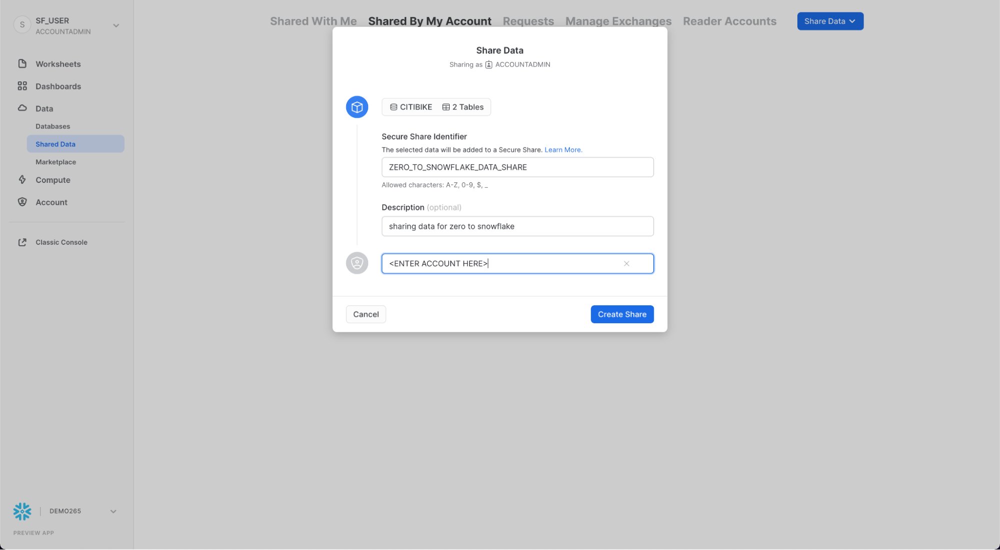
대화 상자가 닫히고 페이지에 생성한 보안 공유가 표시됩니다.

언제든지 소비자를 추가하고 설명을 추가/변경하고 공유의 개체를 편집할 수 있습니다. 페이지에서 공유 이름 옆에 있는 < 버튼을 클릭하여 Share with Other Accounts 페이지로 돌아갑니다.

데이터를 복사하거나 전송할 필요 없이 안전한 방식으로 Snowflake 계정의 데이터에 다른 계정에 액세스 권한을 부여하는 데 몇 초밖에 걸리지 않는다는 것을 보여주었습니다!
Snowflake는 기밀성을 손상시키지 않고 데이터를 안전하게 공유하는 여러 방법을 제공합니다. 테이블 외에도 보안 보기, 보안 UDF(사용자 정의 함수) 및 기타 보안 개체를 공유할 수 있습니다. 민감한 정보에 대한 액세스를 방지하면서 이러한 방법을 사용하여 데이터를 공유하는 방법에 대한 자세한 내용은 Snowflake 설명서를 참조하십시오. .
Snowflake 데이터 마켓플레이스
ACCOUNTADMIN 역할을 사용 중인지 확인하고 Data 아래에서 Marketplace 탭으로 이동합니다.

Listing 찾기
상단의 검색 상자를 사용하여 목록을 검색할 수 있습니다. 검색 상자 오른쪽에 있는 드롭다운 목록을 사용하면 공급자, 비즈니스 요구 사항 및 범주별로 데이터 목록을 필터링할 수 있습니다.
검색창에 COVID를 입력하고 결과를 스크롤한 후 COVID-19 Epidemiological Data(Starschema 제공)를 선택합니다.

COVID-19 Epidemiological Data 페이지에서 데이터세트에 대해 자세히 알아보고 사용 예시 쿼리를 볼 수 있습니다. 준비가 되면 Get Data 버튼을 클릭하여 Snowflake 계정에서 이 정보를 사용할 수 있도록 합니다.

대화 상자의 정보를 검토하고 Get Data를 다시 클릭합니다.

이제 Done를 클릭하거나 Starschema에서 제공하는 샘플 쿼리를 실행하도록 선택할 수 있습니다.

Query Data를 선택한 경우 새 브라우저 탭/창에서 새 워크시트가 열립니다.
- 실행할 쿼리를 선택하거나 쿼리 텍스트에 커서를 놓습니다.
- Play/Run 버튼을 클릭합니다(또는 키보드 단축키 사용).
- 하단 창에서 데이터 결과를 볼 수 있습니다.
- 샘플 쿼리 실행이 완료되면 왼쪽 상단의 Home 아이콘을 클릭합니다.
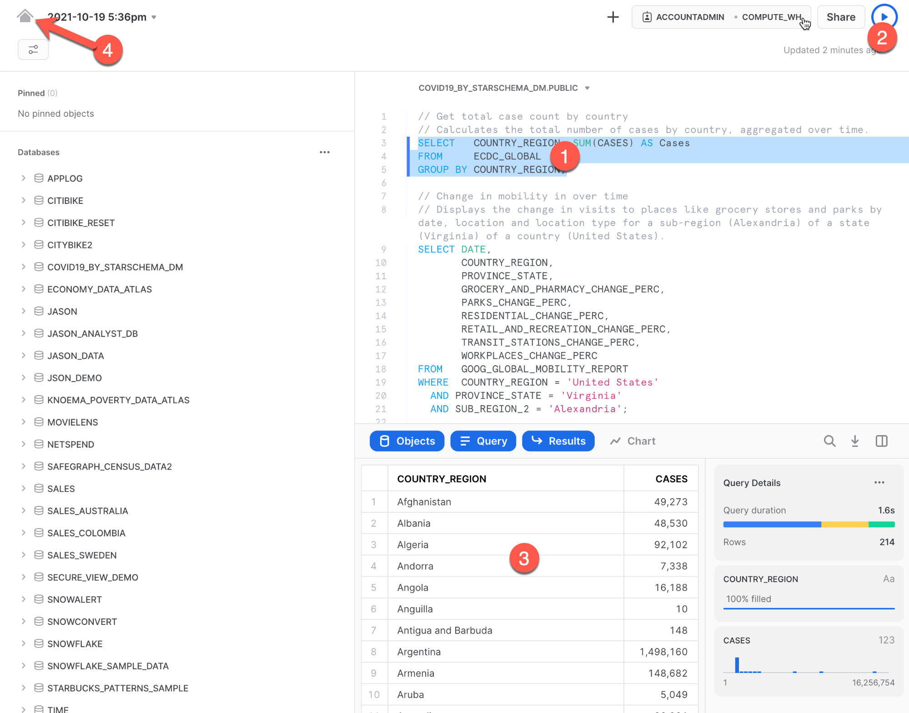
다음:
- Data > Databases를 클릭합니다.
- ‘COVID19_BY_STARSCHEMA_DM' 데이터베이스를 클릭합니다.
- 쿼리에 사용할 수 있는 스키마, 테이블 및 뷰에 대한 세부 정보를 볼 수 있습니다.

이제 글로벌 COVID 데이터로 매일 업데이트되는 Starschema의 COVID-19 데이터 세트를 성공적으로 구독했습니다. 데이터베이스, 테이블, 뷰 또는 ETL 프로세스를 생성할 필요가 없었습니다. Snowflake Marketplace에서 공유 데이터를 검색하고 액세스했습니다.
이 랩의 일부로 생성된 모든 객체를 삭제하여 환경을 초기화하려면 워크시트에서 아래의 SQL을 실행하십시오.
먼저 워크시트 컨텍스트를 다음과 같이 설정합니다.
use role accountadmin;
use warehouse compute_wh;
use database weather;
use schema public;
그다음 이 SQL을 실행하여 이 랩에서 생성한 모든 객체를 삭제합니다.
drop share if exists zero_to_snowflake_shared_data;
drop database if exists citibike;
drop database if exists weather;
drop warehouse if exists analytics_wh;
drop role if exists junior_dba;
이 기초 랩 연습을 완료하신 것을 축하드립니다! Snowflake 기본 사항을 마스터했으며 이러한 기본 사항을 자신의 데이터에 적용할 준비가 되었습니다. 언제라도 기억을 떠올릴 때 필요하다면 이 안내서를 참조하십시오.
자체 샘플 또는 제품 데이터를 로드하고 이 랩에서 다루지 않은 Snowflake의 고급 기능 중 일부를 사용하여 무료 평가판을 계속 사용해 보시길 권해 드립니다.
추가 리소스:
- 새로운 Snowsight 사용자 인터페이스인 Snowsight Docs를 자세히 알아보십시오
- 무료 평가판 극대화를 위한 가이드 문서를 확인하십시오
- Snowflake 가상 또는 현장 이벤트에 참석하여 Snowflake의 기능 및 고객에 관해 자세히 알아보십시오.
- Snowflake 커뮤니티에 참여하세요
- Snowflake University에 등록하세요
- 더 자세한 내용은 Snowflake 영업팀에 문의하시기 바랍니다
다룬 내용:
- 스테이지, 데이터베이스, 테이블, 뷰 및 웨어하우스를 생성하는 방법
- 정형 및 반정형 데이터를 로드하는 방법
- 테이블 간 조인을 포함하여 데이터를 쿼리하는 방법
- 객체를 복제하는 방법
- 사용자 오류를 실행 취소하는 방법
- 역할 및 사용자를 생성하고 권한을 부여하는 방법
- 다른 계정과 안전하고 쉽게 데이터를 공유하는 방법
- Snowflake Marketplace에서 데이터 세트를 사용하는 방법.